Radovi
25 fotografija stvarnih radova Staklorada. Odaberite vrstu posla, a fotografiju otvorite klikom.
 Vitraj sa svecima, detalj
Vitraj sa svecima, detalj
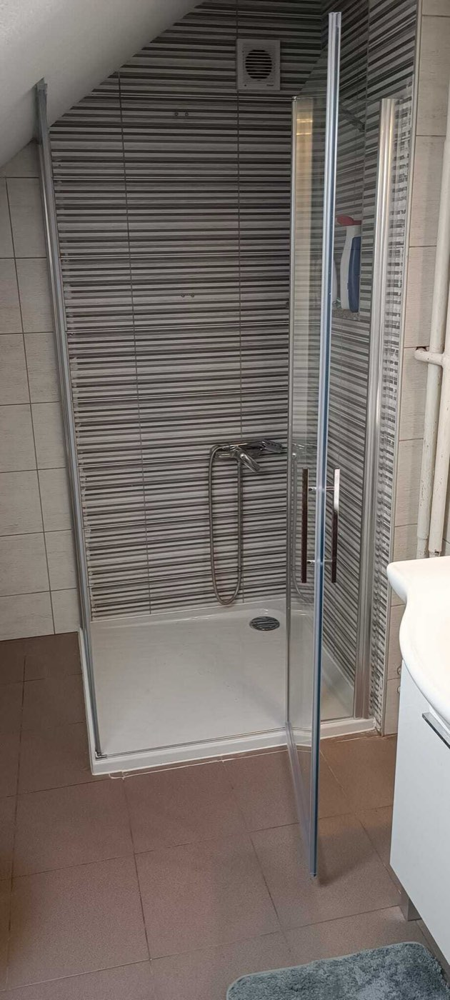
Kutna tuš kabina
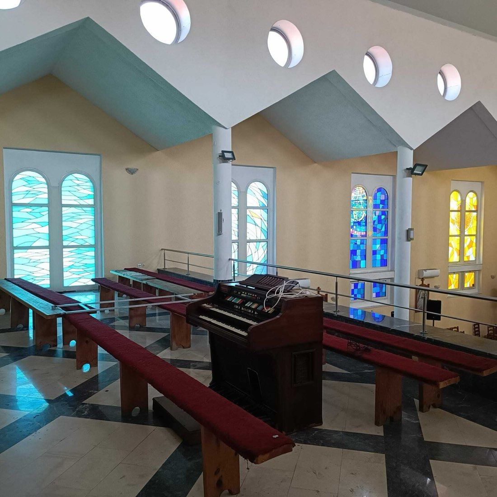
Vitraji u crkvi
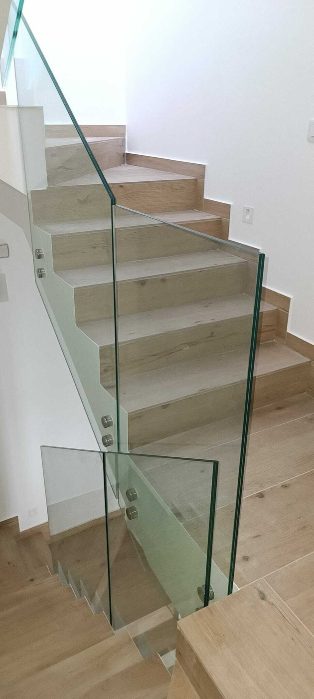
Ograda uz stubište
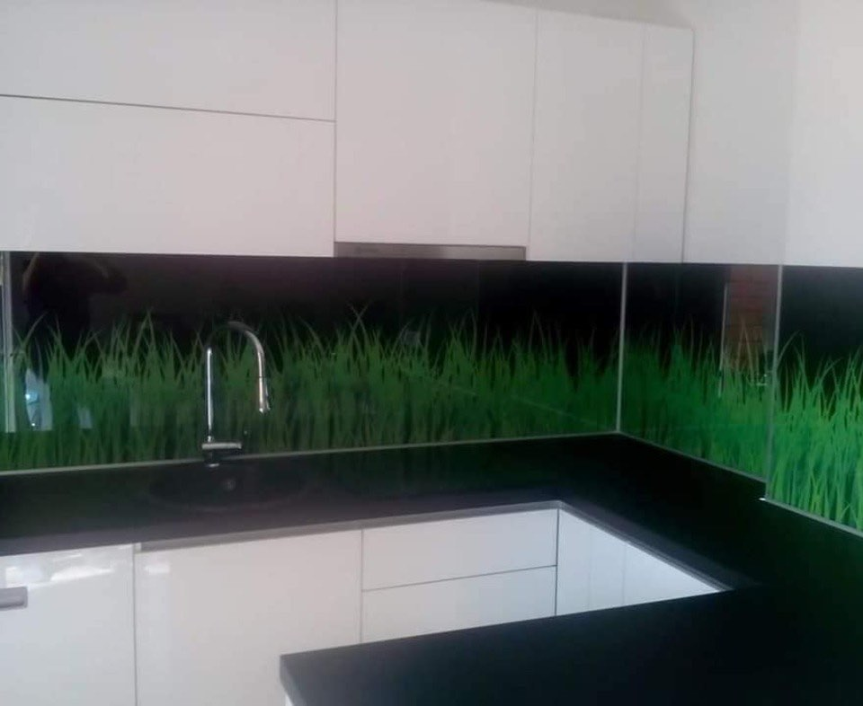
Staklo iza kuhinjske radne ploče Vitraji na vratima
Vitraji na vratima
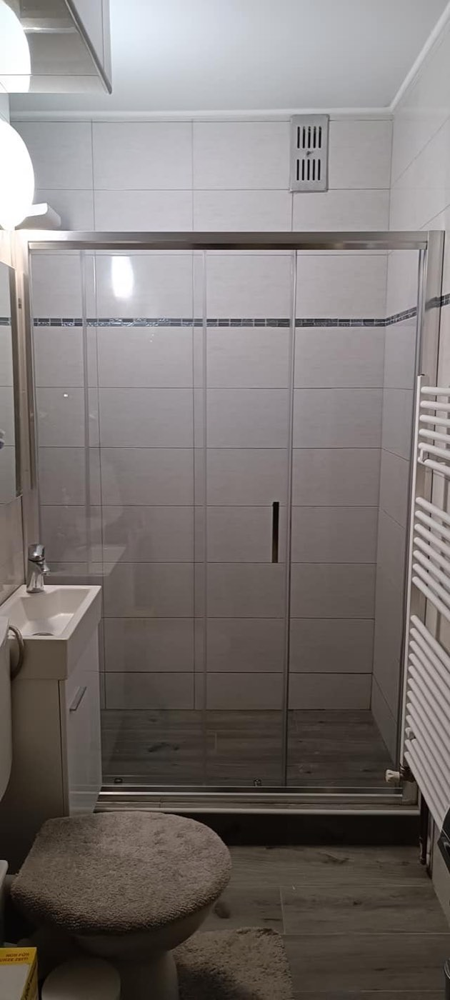
Kabina u niši Vitraj s kalama
Vitraj s kalama
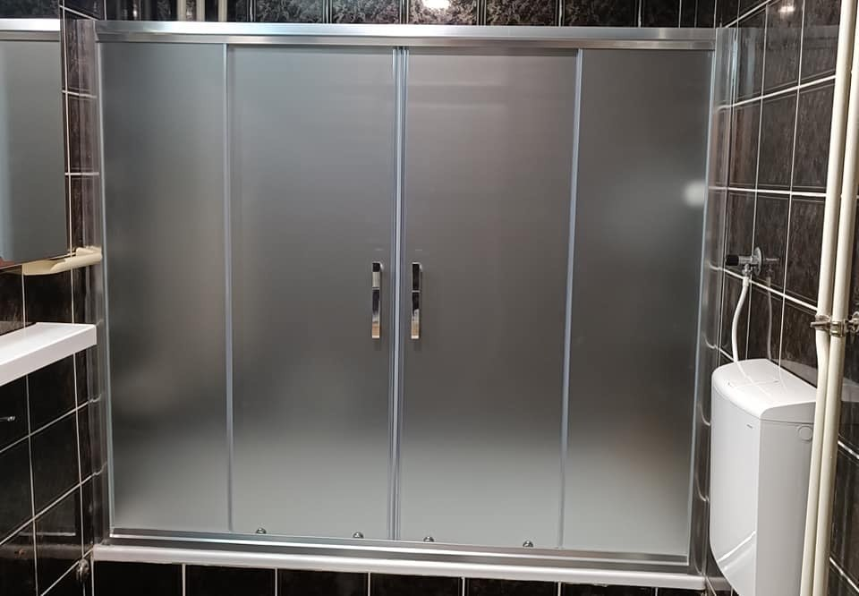
Paravan za kadu, mat staklo Vitraji uz oltar
Vitraji uz oltar Okviri u boji
Okviri u boji
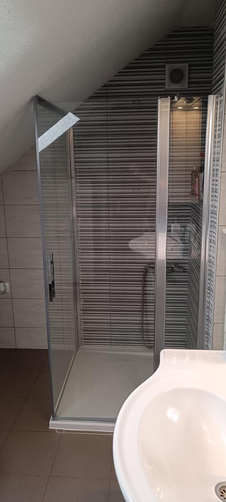
Kabina u potkrovlju Plavi vitraj
Plavi vitraj
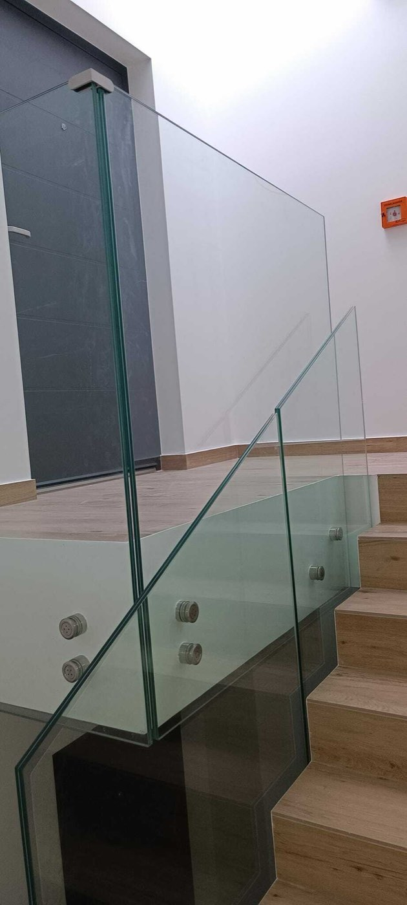
Staklena ograda
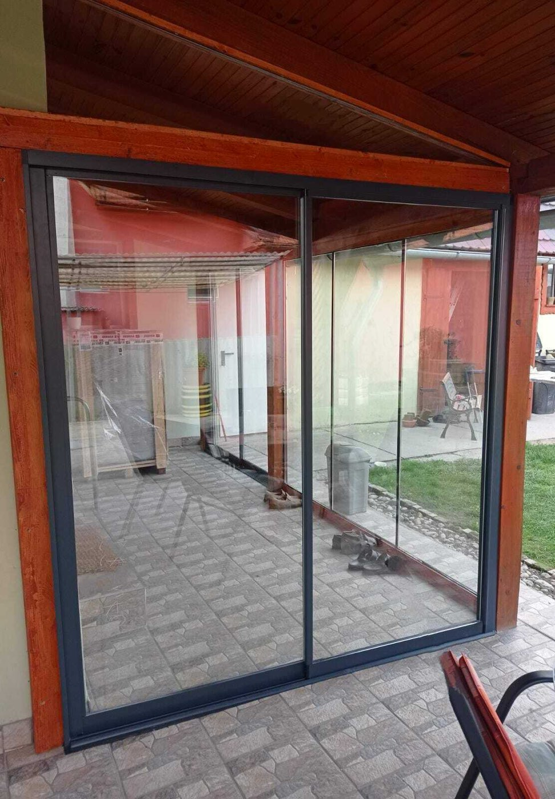
Klizna staklena stijena
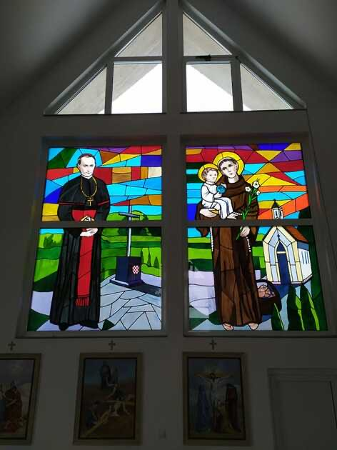
Vitraji sa svecima Kabina sa zaokretnim vratima
Kabina sa zaokretnim vratima
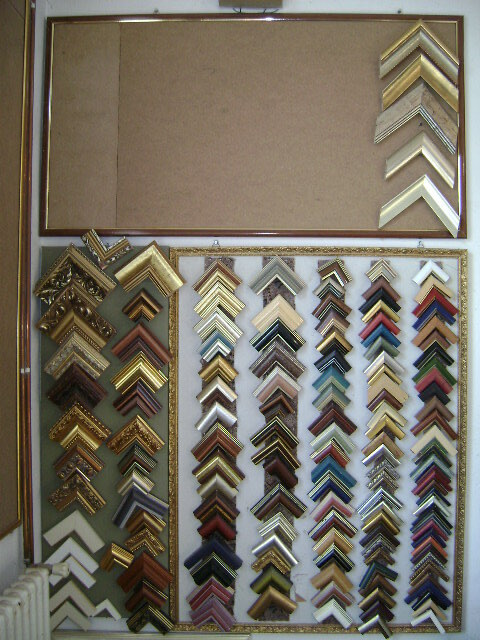
Izbor letvica Žuti vitraj
Žuti vitraj
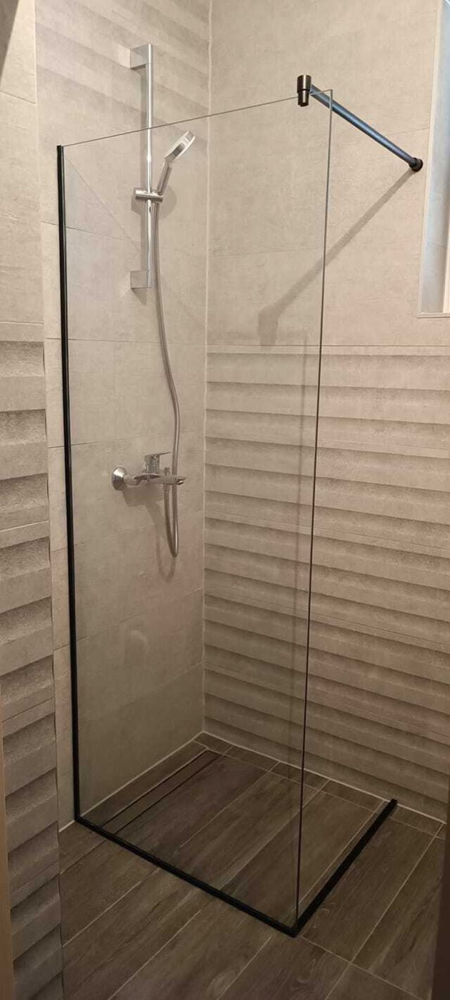
Stakleni paravan
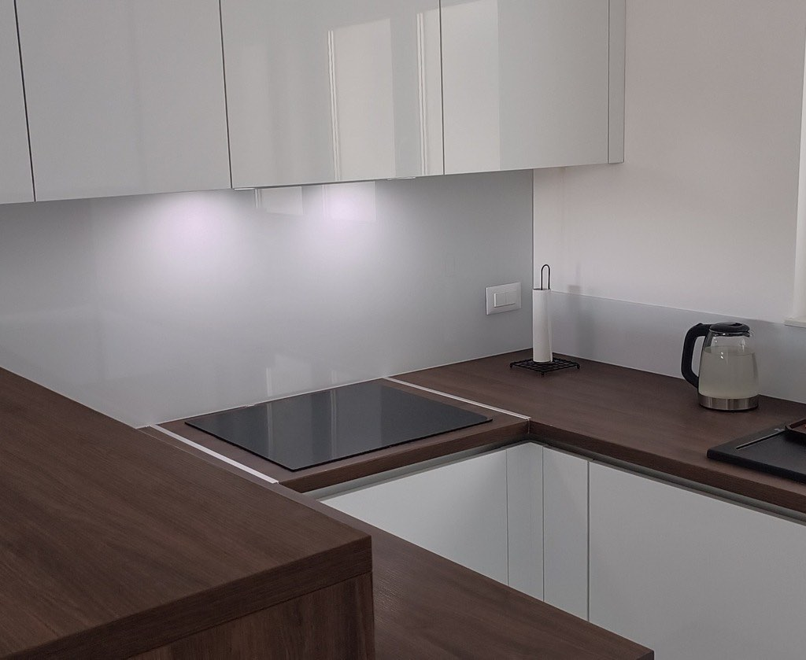
Kuhinjsko staklo
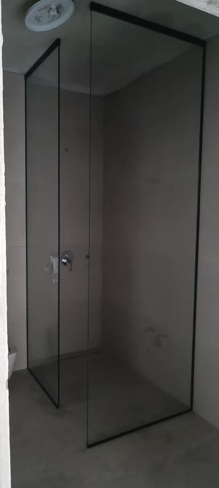
Crni profil
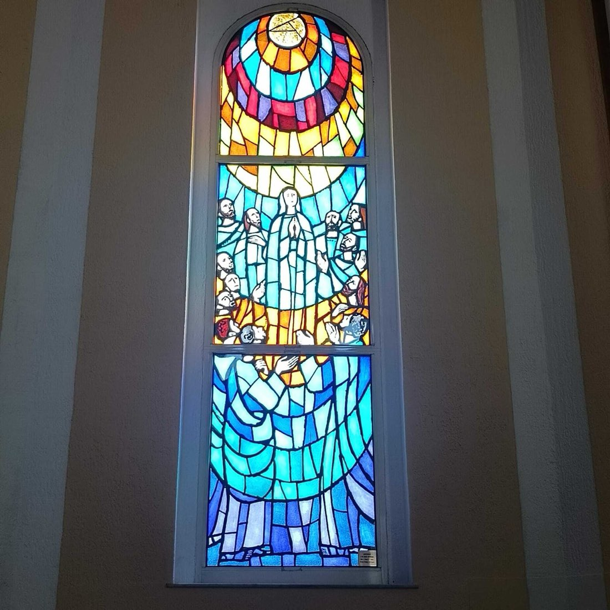
Vitraj s Bogorodicom Kabina u tamnoj kupaonici
Kabina u tamnoj kupaonici
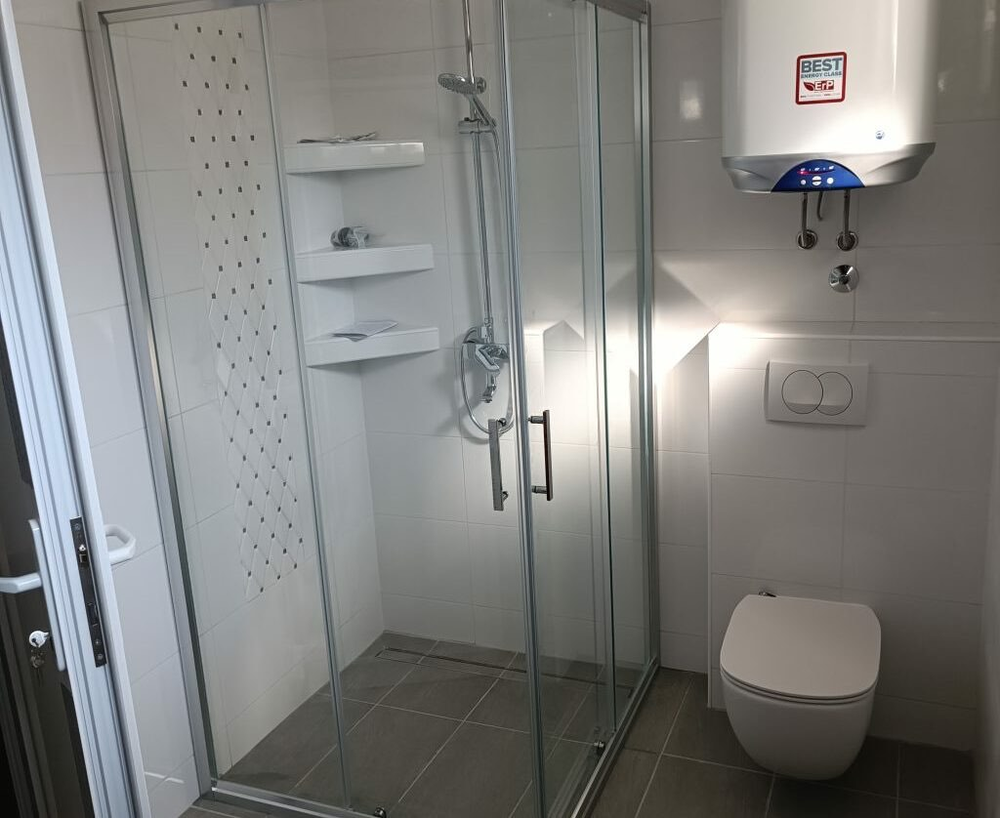
Klizna kabina